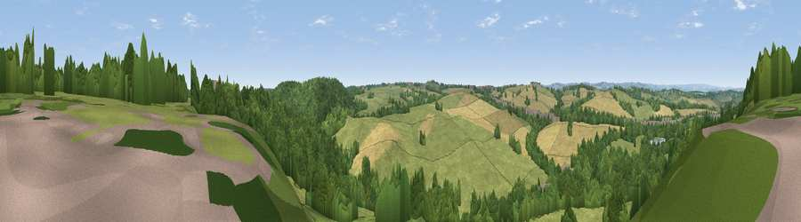

Viewpoint near Stanley
#28208 in England · top 41% of its area beats it · near Stanley · access?Where it is
The exact computed spot (SK 46225 63475). Click the marker for map links.
Public access: no public right of way or access land is recorded at this exact spot — it may be on private land. Computed from Natural England's CRoW access layer and OpenStreetMap rights of way — not the legal definitive map. Always verify locally.
The view, rendered

A 360° render of this exact spot computed from the terrain model, tree cover and land cover — summer colours, afternoon light, calibrated against photographs of famous viewpoints. Real trees, hedges and buildings will differ in detail.
The panorama
Grey silhouette: terrain skyline in each direction (720 bearings, Earth curvature and refraction included). Dashed green: skyline with trees (+15 m) and buildings (+8 m) as obstacles. Blue strip: how far the ground is visible on each bearing.
Where the view opens
Wedge length = distance to the farthest visible ground on that bearing (vegetation-aware). Rings at 10, 25 and 50 km.
What fills the view
43% grassland · 39% woodland · 16% cropland · 1% built-up
Angular shares of the visible panorama (visual magnitude), not map area. Landscape diversity 0.48 (0–1 Shannon).
Key numbers
More beautiful places nearby
The staircase of upgrades: each row has a higher view potential than everything closer. Driving times are estimates from straight-line distance, calibrated against real road routing — check an actual route before setting out.
| Place | Direction | Drive | Score |
|---|---|---|---|
| Viewpoint near Stainsby | N · 1 km | ~3 min | 53.9 |
| Viewpoint near Palterton | NNE · 5 km | ~10 min | 58.5 |
| Viewpoint near Palterton | NNE · 5 km | ~12 min | 59.9 |
| Viewpoint near Bolsover | N · 8 km | ~15 min | 60.4 |
| Viewpoint near Alton | W · 10 km | ~20 min | 67.7 |
| Viewpoint near Brackenfield | WSW · 11 km | ~21 min | 68.3 |
| Crich Stand | SW · 14 km | ~26 min | 73.0 |
| Alport Height | SW · 20 km | ~33 min | 73.9 |
53.16639, -1.31002 · source: screening · position refined by local search. Computed location — check access rights before visiting.